Which skill pack should we standardise on?
Four packs, four tasks (video, app, feature, bug fix), one blind judge.
Default to superpowers. Addy Osmani for new apps. pstack for bug fixes only.
| Pack | /100 | Strong | Weak | Public view |
|---|---|---|---|---|
| superpowersSafest default | 89 | Steady 22 to 23 every task. Most tests. Best video and feature. | No keyboard drag. Stiff video motion. 109 min total. | + Plan first, real TDD − Heavy, token-hungry |
| Addy OsmaniBest for new apps | 89 | Best app (24). Strictest session security. Fastest, 59 min total. | Weak at checking its video. 22 on feature and bug fix. | + Spec first − Large, noisy; author says audit it |
| Matt PocockLean | 84 | Tidy output. Hashed session tokens. | Thin tests. No task win. App shows emails, not names. | + Hugely popular, active − Getting complicated |
| pstackThorough, slow | 83 | Best bug fix (25). | Weakest app and feature (19). Sessions never expire. Slowest, 159 min total. | + Take a few skills − Burns tokens (author agrees) |
Rough ranking: one run per task, 6-point spread. Quality only, token cost not measured. Public view is web search (Aug to Oct 2026, not all sources dated), not a survey.
Detail: scores
Out of 25 per task. Highest per task in green.
| Pack | Video | App | Feature | Bug fix | Total |
|---|---|---|---|---|---|
| Addy Osmani | 21 | 24 | 22 | 22 | 89 |
| superpowers | 22 | 22 | 23 | 22 | 89 |
| Matt Pocock | 21 | 20 | 22 | 21 | 84 |
| pstack | 20 | 19 | 19 | 25 | 83 |
Time to finish
Wall-clock minutes, start to finish, on cloud agents, including any extra agents a pack spawned. Fastest per task in green.
| Pack | Video | App | Feature | Bug fix | Total |
|---|---|---|---|---|---|
| Addy Osmani | 12 | 21 | 11 | 14 | 59 |
| Matt Pocock | 15 | 31 | 22 | 5 | 72 |
| superpowers | 18 | 49 | 33 | 8 | 109 |
| pstack | 22 | 39 | 85 | 13 | 159 |
Runs were concurrent, so a slow cloud machine could stretch any of them. Some feature and bug-fix start times were rounded, so times are accurate to about a minute. No token cost was logged.
Per-criterion scores (correctness, code, scope, verification, craft)
Video
| Pack | Corr | Code | Scope | Verif | Craft |
|---|---|---|---|---|---|
| Addy Osmani | 5 | 4 | 4 | 3 | 5 |
| superpowers | 5 | 5 | 4 | 5 | 3 |
| Matt Pocock | 5 | 4 | 5 | 4 | 3 |
| pstack | 5 | 4 | 5 | 4 | 2 |
App
| Pack | Corr | Code | Scope | Verif | Craft |
|---|---|---|---|---|---|
| Addy Osmani | 5 | 5 | 4 | 5 | 5 |
| superpowers | 5 | 4 | 5 | 5 | 3 |
| Matt Pocock | 5 | 3 | 5 | 3 | 4 |
| pstack | 3 | 5 | 4 | 3 | 4 |
Feature
Scored as totals only (process notes excluded for all four). Clean-machine tests, server / client: superpowers 11 / 26, Addy 10 / 20, Matt 12 / 18, pstack 8 / 18.
Bug fix
| Pack | Corr | Code | Scope | Verif | Craft |
|---|---|---|---|---|---|
| Addy Osmani | 5 | 4 | 5 | 4 | 4 |
| superpowers | 5 | 4 | 5 | 4 | 4 |
| Matt Pocock | 5 | 4 | 4 | 4 | 4 |
| pstack | 5 | 5 | 5 | 5 | 5 |
All four made the same one-line fix. The bug-fix scores differ only on the tests written.
Why each pack behaved this way
Lines from each pack's own instructions, next to what we observed.
NO PRODUCTION CODE WITHOUT A FAILING TEST FIRST
Most tests on the feature (11 server, 26 client), including a 403 test for deleting someone else's comment. Its video run added a verify script checking 1080p, H.264 and length.
bench/feature-superpowers/.cursor/skills/test-driven-development/SKILL.md:34
Session cookies are `httpOnly`, `secure`, and `sameSite: 'lax'` or `'strict'` ... with a bounded `maxAge`.
Strictest expiry check, done in the database query: "WHERE s.id = ? AND s.expires_at > ?".
bench/app-addyosmani/.cursor/skills/security-and-hardening/SKILL.md:90
Every interactive element must be keyboard accessible
Only app with keyboard drag between columns (KeyboardSensor with sortableKeyboardCoordinates).
bench/app-addyosmani/.cursor/skills/frontend-ui-engineering/SKILL.md:183
One slice at a time. One seam, one test, one minimal implementation per cycle.
Judge called the app "lean, no extras", but coverage stayed shallow (6 API + 5 UI tests) and the whole API sits in one ~500-line file.
bench/app-mattpocock/.cursor/skills/tdd/SKILL.md:37
Spawn N parallel candidates at the same task, pick a base, graft the strongest parts of the losers into it.
The app and video runs launched "Arena design" candidate agents (run log: "arena wants two candidates"). App run took 39 minutes.
pstack 850d7f2e skills/arena/SKILL.md:3 · evidence raw/app-pstack/run-log.md:20
Spawn Comment Sicko, fix accepted findings, and offer encodings for claimed constraints.
The feature run spawned a "Review comments in the diff" agent and took 85 minutes against 10 to 32 for the others, still ending with the widest diff (18 files).
pstack 850d7f2e skills/no-comments/SKILL.md:3 · evidence raw/feature-pstack/run-log.md (23:37 to 01:02 UTC)
Drill down
Real screenshots of each pack's running app, captured on the box with seeded demo data. Callouts are judge findings.
App: a team task board built from scratch
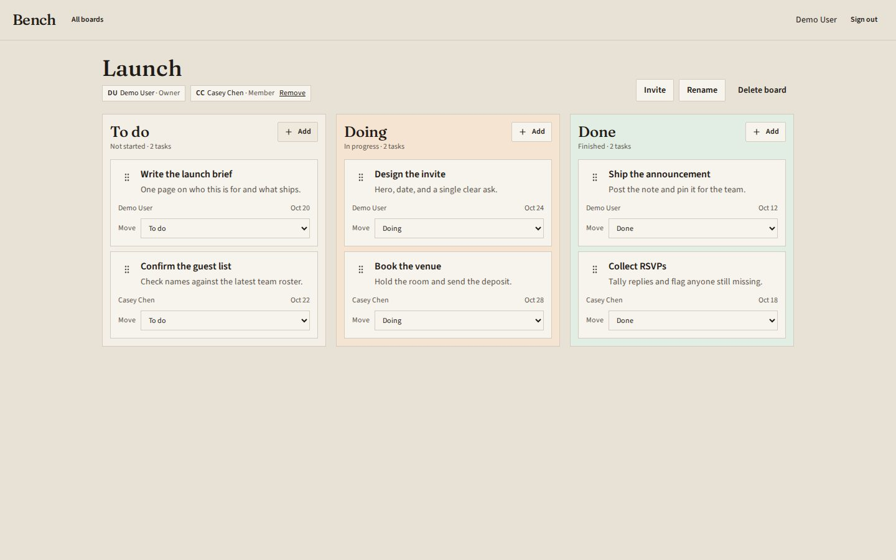
Addy Osmani · 24Sessions expire; keyboard drag between columns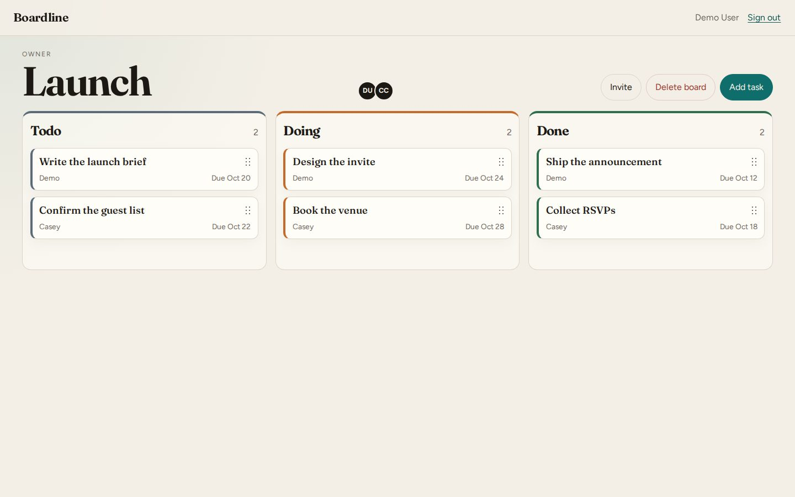
superpowers · 22Pointer drag only, no keyboard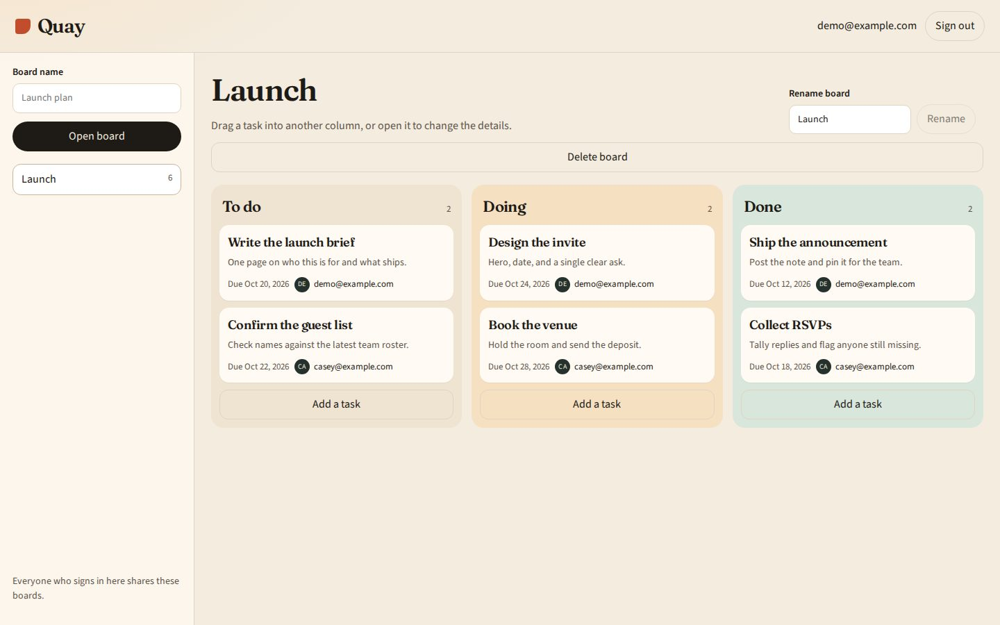
Matt Pocock · 20Members stored by email only, so assignees show as emails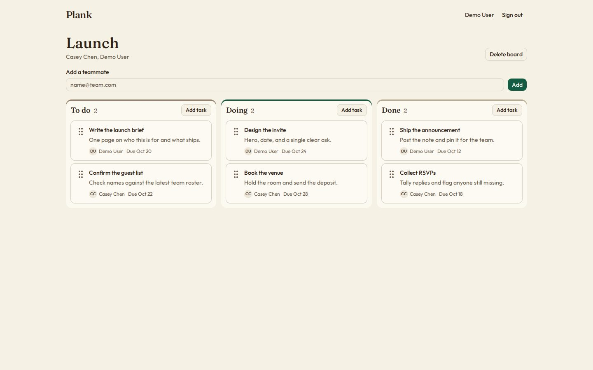
pstack · 19Sessions never expire; only 3 API testsSign-in screens
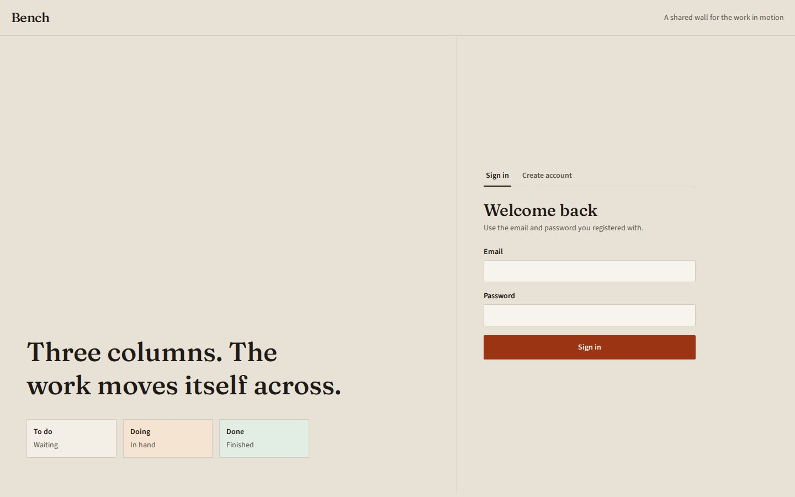
Addy Osmani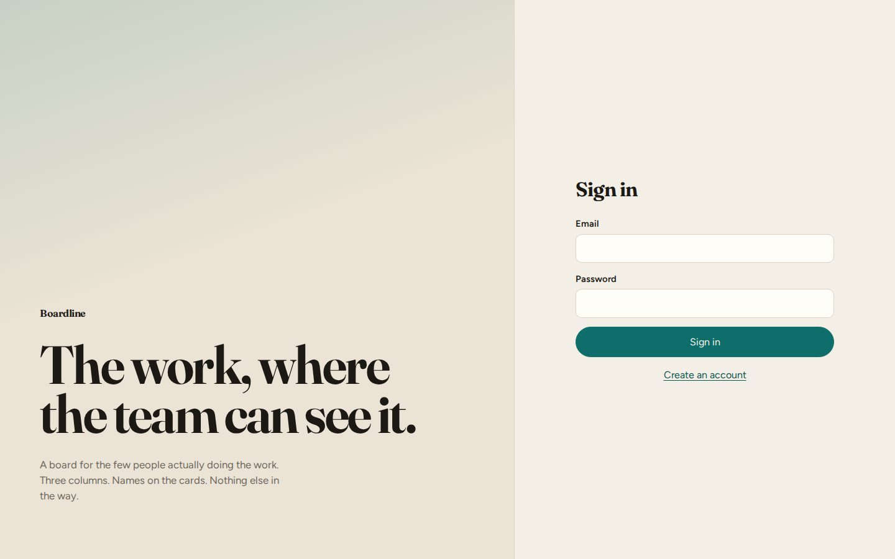
superpowers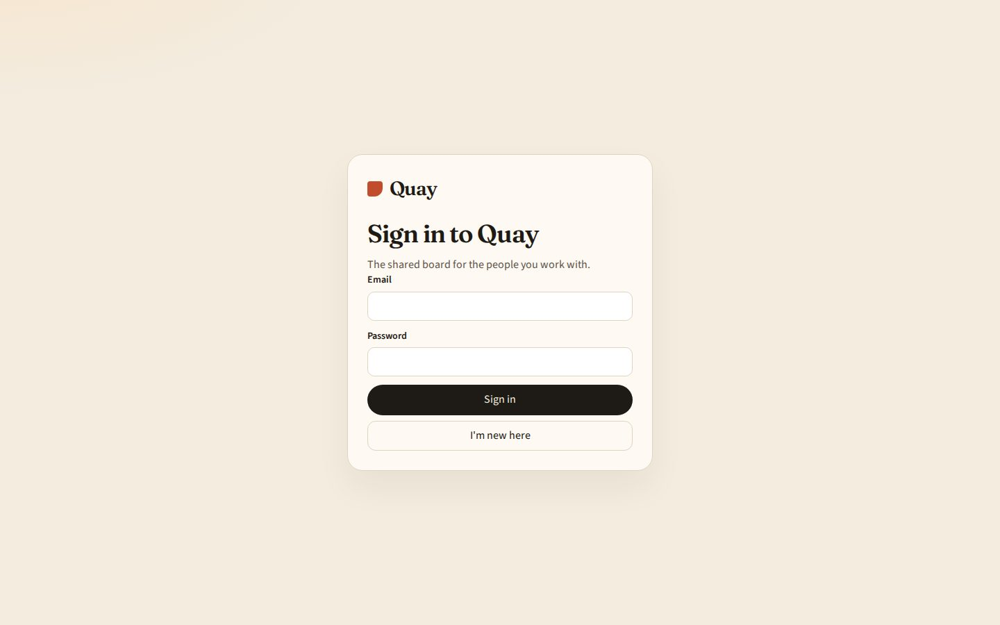
Matt Pocock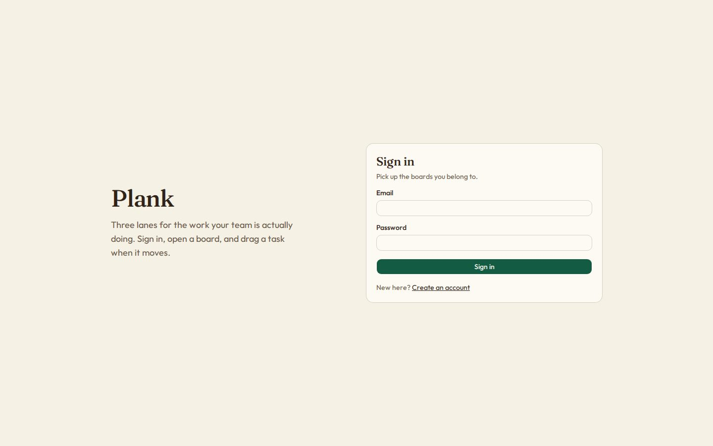
pstackFeature: add comments to tasks
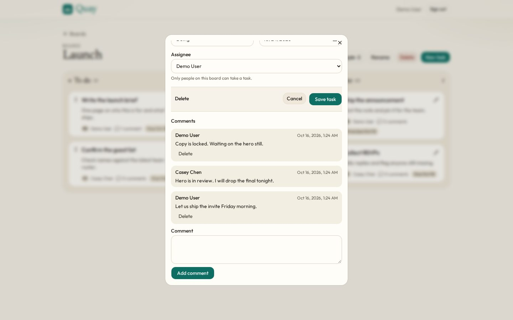
superpowers · 23All 3 comments visible, absolute timestamps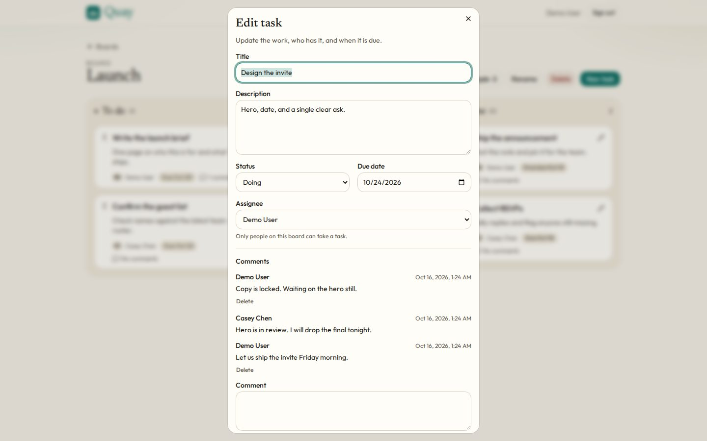
Addy Osmani · 22All 3 comments visible, absolute timestamps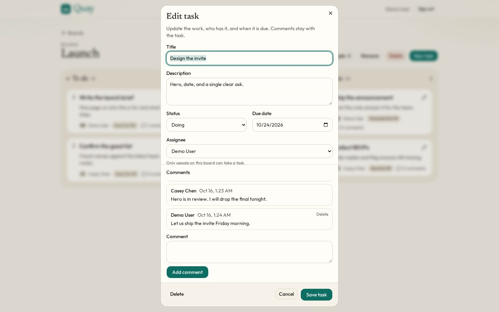
Matt Pocock · 22List height-capped: 2 of 3 comments visible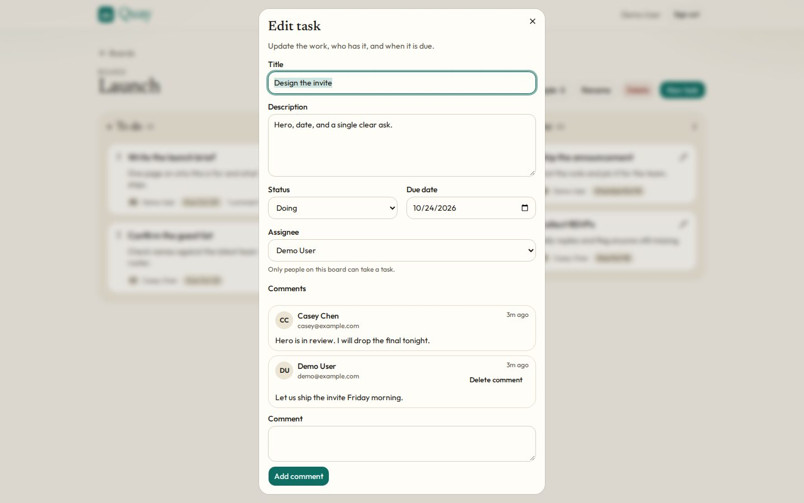
pstack · 19Height-capped (2 of 3); relative times ("3m ago")Comment counts on the board
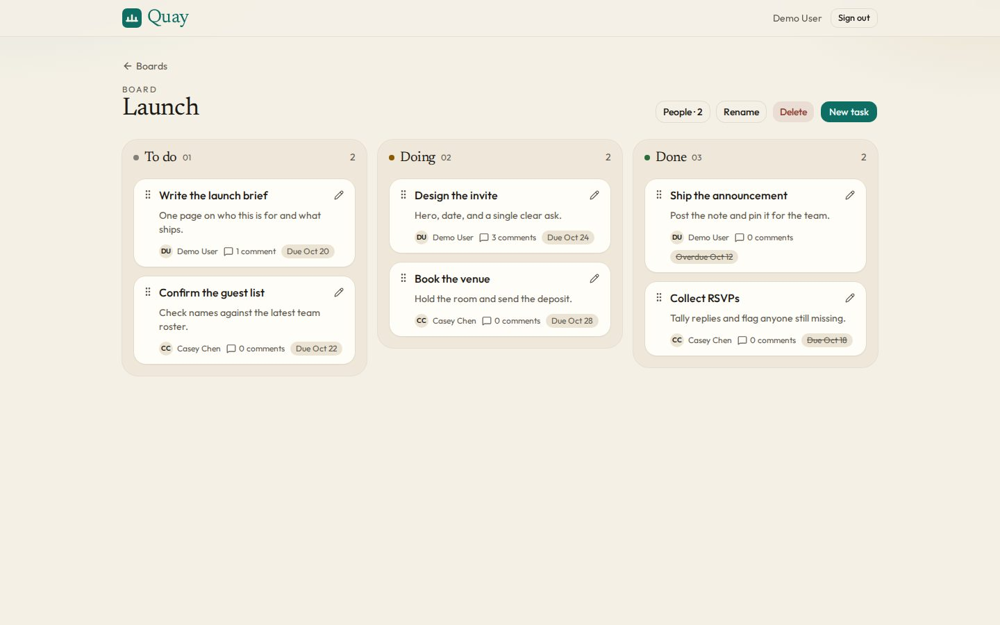
superpowersEvery card shows its count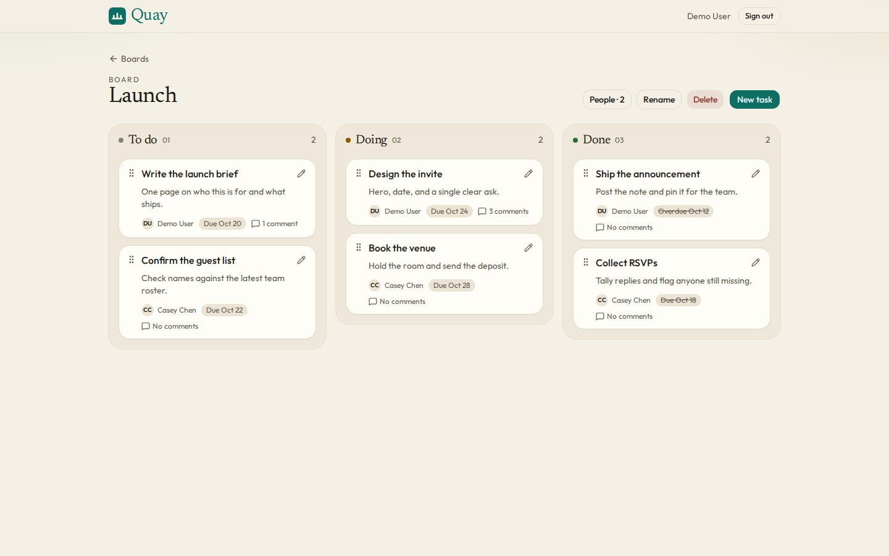
Addy OsmaniEvery card shows its count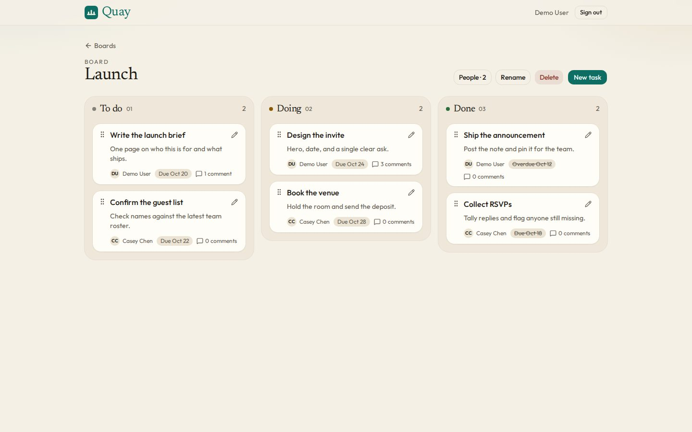
Matt Pocock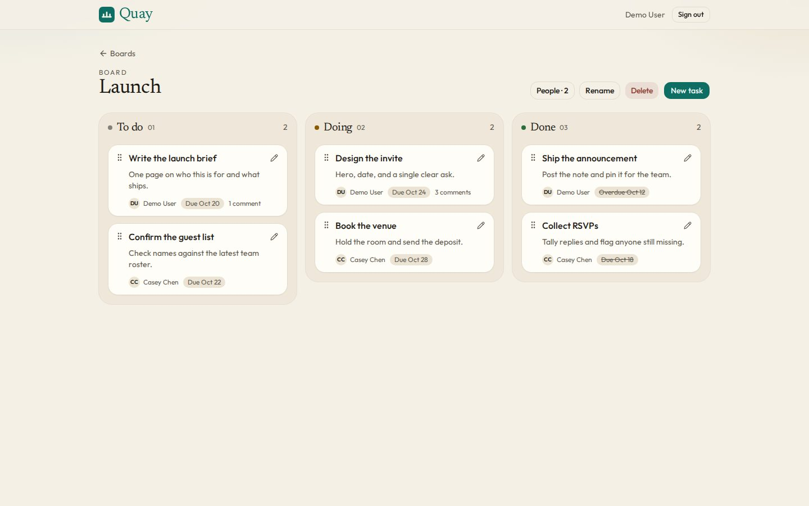
pstackZero counts hiddenAll four persist comments, delete them with their task and enforce author-only delete on the server. None asks before deleting.
Video: a 12 to 15 second product intro
Bug fix: assignee cleared when a task moves to Done
All four found the same root cause and made the same one-line fix. pstack scored 25 because its tests were the most thorough and the only ones checking the fix doesn't over-correct: move to done, edit while done, explicit null still clears, and a full editor save. The others scored 21 to 22 on thinner tests.
Method and caveats
Same model (Grok 4.7) and prompt per task, a fresh checkout with only one pack installed. Outputs were anonymised as A to D and scored blind on five criteria, 1 to 5 each. App, feature and bug-fix tests were rerun on a clean machine; all pass.
One run per cell, so gaps of 1 to 2 points are noise. Token cost not measured; pstack's extra agents not costed. Matt Pocock's app run errored once and was rerun. Pack versions: pstack 850d7f2e, superpowers bb92a777, Matt Pocock 49dd158d, Addy Osmani aeac41d4. Full notes, raw outputs and judge scores are in the repository.